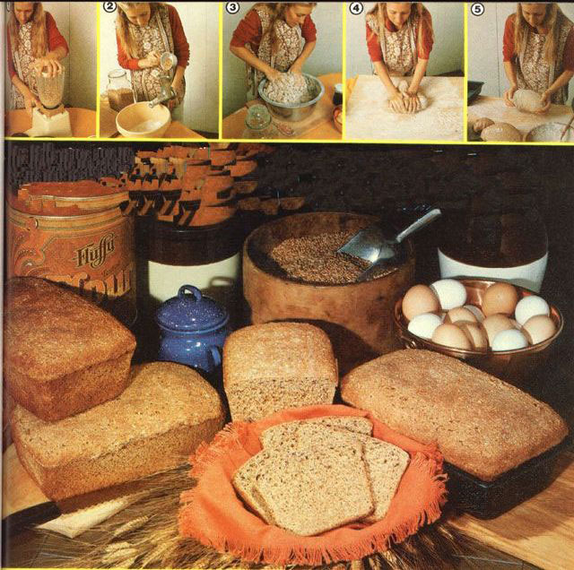

This loaf is as delicious and nutritious as it is elevated!
I baked my first loaf of whole-grain bread over 30 years ago-and I've tried a passel of recipes in the decades that have followed-but I've never been able to make a batch that'd rise more than half an inch above the pans... even when I used one packet of yeast for each and every two-pound loaf!
On the other hand, my friend Eva Knausenberger uses only three yeast packs to bake the equivalent of 10 two-pound loaves... and her bread always rises to delicious heights!
Naturally, I demanded her secret recipe. Eva, however, is a "dump cook"- using a "little" of this, and a "certain amount" of that-as her ingredients vary with supply and with her baking-day whims. She agreed to let me watch her bake, though, and-as the accompanying photos show-I was able to record just how Eva turns out her beautiful batches of bread. Here's the procedure:
[1] Soak 12 cups of mixed grains (rice, millet, wheat, barley, groated oats, rye, buckwheat, and triticale in equal amounts) overnight... then macerate them in a blender.
[2] Use a flour mill to grind up 8 pounds of whole wheat, 1 pound of triticale, and 1/2 pound of rye into flour... and hand-mix these ingredients with the blended grains.
[3] Add 1/2 cup of olive, safflower, or corn oil... 1 cup of unsulfured molasses... 4 to 6 eggs... 3/4 cup of corn flour... 1 cup of buttermilk powder (sometimes sour cream)... and 3 packets of dry yeast (soaked-until it "proofs"-in a little of the grain water) to the grain and flour mixture.
[4] Knead the dough vigorously-by hand-for 15 minutes, or until the dough is very stiff... cover it with a moist towel... let it stand at room temperature for two hours... then knead the bread-to-be thoroughly again.
[5] Finally, separate the dough into loaves and bake in a 350°F oven for approximately two hours (the second rise takes place in the oven).
[6] You probably won't be able to wait the recommended 24 hours of "curing time" before you sample your huge loaves... because they're as tummy-titillating as the aroma promises: Eight-grain bread is definitely a treat to taste... and a healthful one, as well!
|
 |
|
|